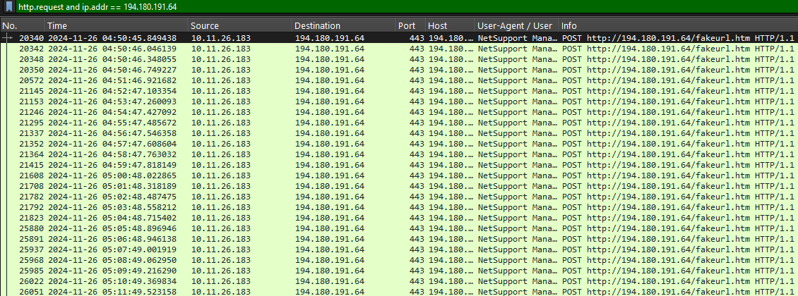
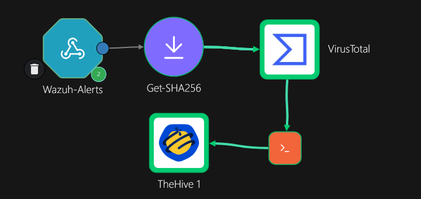
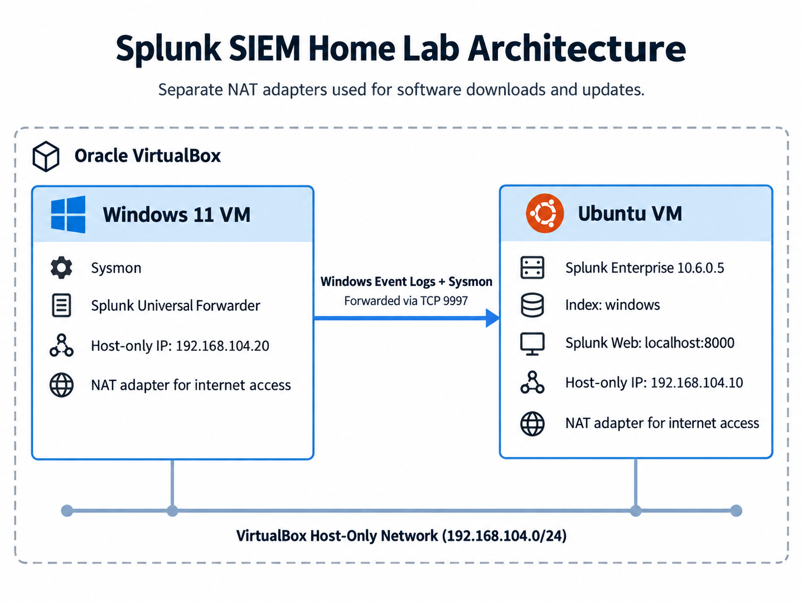

I build home labs and work through real malware and phishing samples to practice what a SOC analyst does every day: collecting logs, writing detections, automating alerts and investigating what fired.
Hands-on projects I've done outside of class. Each one has a GitHub repo with the full write-up, configs and screenshots.

CASE-004 · closedThree real malware infections investigated from packet captures. Found the infected machine and user, how it got infected and the C2 servers, then wrote an incident report for each. One started with 19 IDS alerts where most were just noise.
View projectFrom: FTXinsurance <noreplye@promotix.com> Subject: Withdraw Process is Authorized Now ! spf=pass smtp.mailfrom=amazonses.com dkim=pass header.d=promotix.com dmarc=pass link: kif.re.kr/viewer.aspx?returnurl= taurus-online.ch/wp/pf/CASE-003 · closed
Triage of real phishing emails from a honeypot collection: headers, SPF/DKIM/DMARC, the real sending path, and links and attachments without opening them. Two passed every check and were still phishing. One was part of a campaign in 10 of the 39 emails I pulled.
View project
CASE-002 · closedWazuh catches a scheduled task being created on a Windows VM, Shuffle checks the file hash on VirusTotal, and an alert lands in TheHive with the details filled in. About 8 seconds, no manual steps. Then I worked the case and closed it.
View project
CASE-001 · closedA Windows 11 VM running Sysmon forwards logs to Splunk Enterprise on Ubuntu. I wrote SPL searches to catch encoded PowerShell and failed logins and put them on a dashboard.
View project